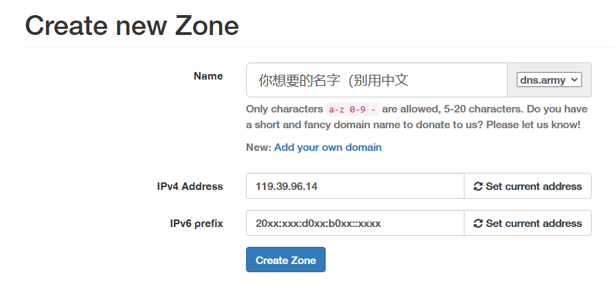

# 前言
因为 ipv6 普及度日益增加，在自己的环境里搭建简易服务器的想法就逐渐发芽；无论是用于博客网站、NAS 或私有云的搭建，还是用来开游戏服务器，都能够简单易行地实现（因为有公网 ipv6）。
不过，很多时候家庭环境下 ipv6 地址也会发生变化，尤其是电脑重启、宽带重拨的时候，那么如何在没有固定 ipv6 的情况下让别人能更容易找到我们的地址呢？很简单，当然是用 DDNS 了。
DDNS，也就是动态 DNS，将一个变化的 IP 绑定到域名上，通过脚本定时检测和更新地址，这样即使地址变化，域名解析出来的地址也会跟着变化，仍然可以使用同一个域名定位到同一个地址。
# 使用 dynv6
官网：https://dynv6.com/
首先用邮箱注册一个账号，接着进入 My Zones，点击 Create New Zone，在 Name 里输入你想要的网址名称和后缀类型，下面的地址可以先点击 Set current address，这样网页就会填入你的外网 IP 地址（应注意检查，ipv4 基本不会是跟电脑一致，但 ipv6 需要一致）。

点击创建后，若网址没有冲突，则创建成功；直接点击这个域名，上面有两个选项是可以自己修改的：status 和 records。
# 创建 DNS 记录
在 Status 里，点击 Edit Zone，将 ipv6 地址再次设为你的公网 ipv6 并保存，这样主域名就会直接解析到你的电脑上；
在 Records 里，可以编辑或删除现有的 AAAA 记录，也可以新增其他 DNS 记录。
# 创建子域名
点击 Add Record，选择 AAAA 类型（A 是 ipv4，AAAA 是 ipv6，CNAME 是网站别名一般用不到），前面的 name 里填写子域名前缀（比如我要创建 web.domainname.dynv6.net，那就在这里写 web），后面的地址里填写目标 ipv6 即可。
# 设置 DDNS 自动更新
提示：建议将此脚本部署于 Windows 服务器上，而非自己的电脑
# 下载 wget 和 grep
网上很多教程，这里列两个：
windows 下 grep 的安装与使用
win10 安装 wget
记得检查好环境变量，确定 cmd 下运行这两个命令有输出。
# 下载 instsrv.exe 和 srvany.exe
# 编写脚本
- 在特定路径下创建文件夹，将上述 instsrv.exe、srvany.exe 以及后续脚本均放在此处；
- 创建 install_server.bat 文件：
@echo off
set curexe=%~dp0
cd /d %curexe%
"%curexe%instsrv.exe" ddns_dynv6 "%curexe%srvany.exe"
@echo ddns_dynv6 服务添加完成
@echo 修改服务路径
REM 添加注册表语法: reg add 注册表路径 /v 项名称 /t 值类型 /d 数据 /f 表示强行修改不提示
REM 名称 Application 值为你要作为服务运行的程序地址 /d对应的参数有斜杠不是为了转义引号，而是路径还有斜杠，默认将引号转义了，额外添加斜杠是为了保留引号
set regpath=HKEY_LOCAL_MACHINE\SYSTEM\CurrentControlSet\Services\ddns_dynv6\Parameters\
REM 名称 AppDirectory 值为你要作为服务运行的程序所在文件夹路径
reg add %regpath% /v AppDirectory /t REG_SZ /d "%curexe%\" /f
REM 名称 AppParameters 值为你要作为服务运行的程序启动所需要的参数
reg add %regpath% /v Application /t REG_SZ /d "%curexe%dynv6.bat" /f
net start ddns_dynv6
pause- 创建 remove_server.bat 文件：
@echo off
net stop ddns_dynv6
instsrv ddns_dynv6 remove
pause- 创建 dynv6.bat 文件：
@echo off
@set tempnum=
@set ipaddr=
@set oldipaddr=1.1.1.1
rem domain=你注册的域名（dynv6.net 提供多种域名后缀可自行修改）
@set domain=【在这里填写你记录的域名，填zone名称】
rem token=你注册后的钥匙（dynv6.net 提供）
@set token=【在这里填写你的token，把这段文字和括号删掉然后粘贴】
@set IPV6_REGEX="\(\([0-9A-Fa-f]\{1,4\}:\)\{1,\}\)\(\([0-9A-Fa-f]\{1,4\}\)\{0,1\}\)\(\(:[0-9A-Fa-f]\{1,4\}\)\{1,\}\)"
@set IPV4_REGEX="[0-9]\{1,3\}\.[0-9]\{1,3\}\.[0-9]\{1,3\}\.[0-9]\{1,3\}"
@set URL="https://dynv6.com/api/update?hostname=%domain%&token=%token%&ipv4=%%ipaddr%%"
@set URLV6="https://dynv6.com/api/update?hostname=%domain%&token=%token%&ipv6=%%ipaddr%%&ipv6prefix=%%ipaddr%%"
@set BIN=wget -t 2 --prefer-family=IPv6 --no-dns-cache --no-check-certificate
rem ***ipv4***（dynv6也提供ipv4动态域名服务）
rem for /F %%i in ('nslookup %domain% ns1.dynv6.com ^|grep -m2 -o %IPV4_REGEX%') do ( set oldipaddr=%%i)
rem ***ipv6***
for /F %%i in ('nslookup -qt^=AAAA %domain% ns1.dynv6.com ^|grep -m2 -o %IPV6_REGEX%') do ( set oldipaddr=%%i)
@echo Current %domain% IP Add:%oldipaddr%
:start_ip1
rem @cls
@echo ...
@echo 1.####从ip.sb获得地址####
@set ip6addr=null
REM ***ipv6***
for /F %%i in ('%BIN% -O- http://ip.sb ^|grep -m 1 -o %IPV6_REGEX%') do (set ipaddr=%%i)
if "%ipaddr%" == "null" (
echo 没有IPV6地址或获得IPV6地址失败
timeout 5
goto start_ip2
) else (
echo 获得IP地址:%ipaddr%，旧IP地址:%oldipaddr%
if NOT "%oldipaddr%" == "%ipaddr%" (
echo ---更新IP---
goto update_web_ip
) else (
echo IP没有改变
timeout 300
cls
goto start_ip2
))
:start_ip2
@ipconfig /flushdns
@echo ...
echo 2.####从checkip.dyndns.com获得地址####
@set ipaddr=null
REM ***ipv4***
rem for /F %%i in ('%BIN% -O- http://checkip.dyndns.com ^|grep -m 1 -o %IPV4_REGEX%') do (set ipaddr=%%i)
REM ***ipv6***
for /F %%i in ('%BIN% -O- http://checkipv6.dyndns.com ^|grep -m 1 -o %IPV6_REGEX%') do (set ipaddr=%%i)
if "%ipaddr%" == "null" (
echo 没有IP地址或获得IP地址失败
timeout 5
goto start_ip1
) else (
echo 获得IP地址:%ipaddr%，旧IP地址:%oldipaddr%
if NOT "%oldipaddr%" == "%ipaddr%" (
echo ---更新IP---
goto update_web_ip
) else (
echo IP没有改变
timeout 300
cls
goto start_ip2
))
:update_web_ip
@echo ==============================================
@echo ipaddr="%ipaddr%"
@echo ==============================================
@set var=null
REM ***ipv4***
rem for /F "tokens=*" %%i in ('%BIN% -O- %URL%') do (set var=%%i)
REM ***ipv6***
for /F "tokens=*" %%i in ('%BIN% -O- %URLV6%') do (set var=%%i)
echo 更新信息=%var%
if "%var%" == "addresses updated" goto end
echo 更新失败
timeout 120
goto start_ip2
:end
set oldipaddr=%ipaddr%
echo 更新数据成功
timeout 300
goto start_ip2
REM 以上每个TIMEOUT指令都表示等待一定时间（秒），可以按实际情况修改
REM 我这里的300秒应该是够用的，太短了占用过多资源，太长了更新不及时# 开机自启动
创建一个计划任务即可，详情可百度教程